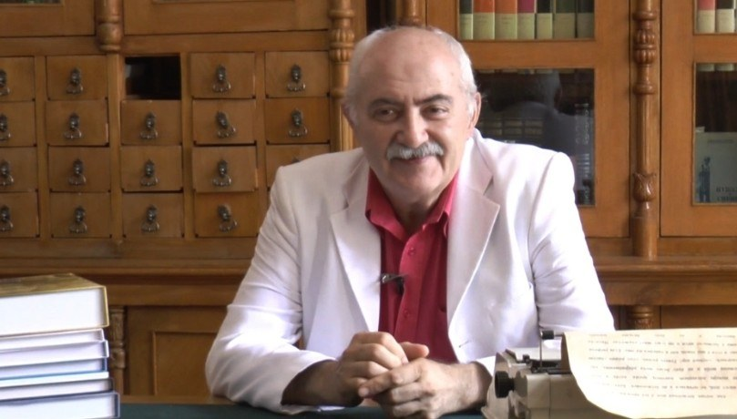
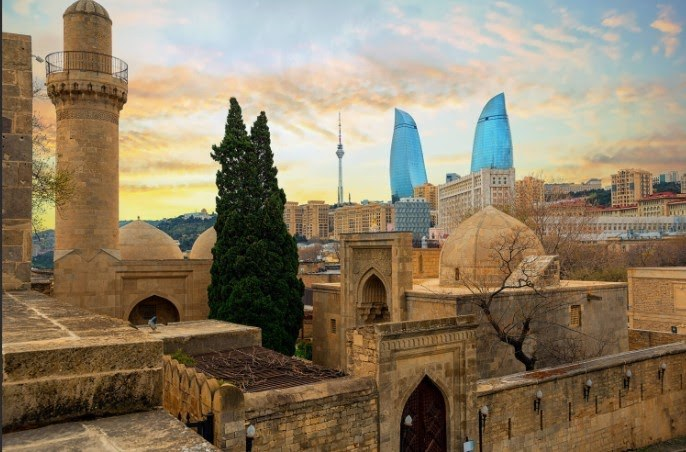
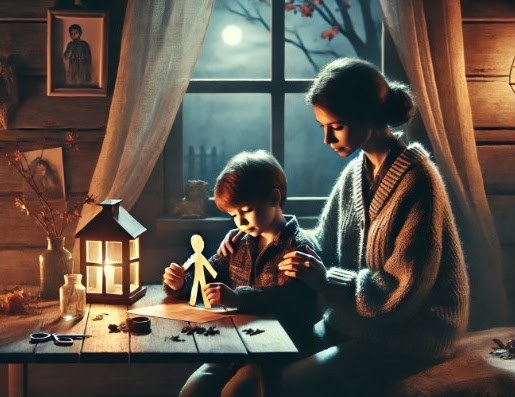
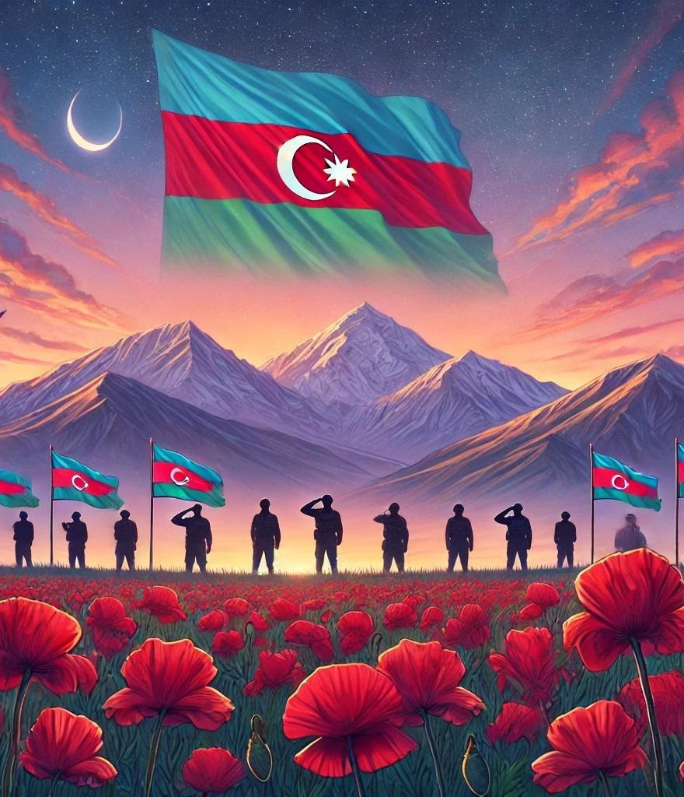

Poeziya
Agac; Anlarsan; Azan; Bir də o yerə qayıdaram mən; Bir gün səndən hamı dönsə; Gənclik və qocalıq; Həkim çağırmaq; İnsan olaq; İşığın kölgəsi yoxdur; Kağızdan ata; Məni tərk eləmə; Mənim şəhidlərim; Möcüzə; Qar yağır; Səndən savayı; Xoş söz
Eldar Əhədov — poeziya toplusu

Agac; Anlarsan; Azan; Bir də o yerə qayıdaram mən; Bir gün səndən hamı dönsə; Gənclik və qocalıq; Həkim çağırmaq; İnsan olaq; İşığın kölgəsi yoxdur; Kağızdan ata; Məni tərk eləmə; Mənim şəhidlərim; Möcüzə; Qar yağır; Səndən savayı; Xoş söz

Gurlayır fokstrot, hayqırır toplar,
Kəndlər və yazılar alışır oddan,
Bir ağac gözləyir yalnız, intizar,
Sən öz pəncərəndən baxarsan haçan.
Buz sınır, idraklar işığa möhtac,
Çıxan Ay alova bürünmüş bu an,
Yenə də gözləyir o tənha ağac,
Sən öz pəncərəndən baxarsan haçan.
Gün boyu fikirlər səni izləyir,
Önündə də divar, divar arxadan,
Yalnız o ağacdı durub, gözləyir,
Sən öz pəncərəndən baxarsan haçan.
Әks-səda yayılıb, boğulur suda,
Sanki yoxa çıxdı, dağıldı zaman,
Ağac nigarandı, gözləyir o da,
Sən öz pəncərəndən baxarsan haçan.
Sən not pıçıltısı kimi yağan qar,
Qarışdin gecənin xışıltısına,
Yenə də o ağac qalıb intizar...
O, sənə bənzəyir, sən isə ona.
Rus dilindən tərcümə: Əlviz Əliyev
TƏSVİRİN TƏHLİLİ
Beləliklə,
Bu təsvir, şeirdəki tənhalıq, gözlənti və mübarizə mövzularını çox gözəl bir vizual kompozisiya ilə əks etdirir. Ağacın yanması və insanın uzaqdan baxışı insanın daxili dünyası və təbiət arasında əlaqəni gücləndirir, şeirin ruhunu tam şəkildə çatdırır.
ŞEİRİN TƏHLİLİ
Bu şeir, insanın tənhalığını, gözləntisini və daxili mübarizələrini təsvir edir.
Fokstrot və topların hayqırması: Bu misralar müharibə və xaos atmosferini təsvir edir. Fokstrot — həyatın davam edən ritmi, topların səsi isə müharibənin gətirdiyi dağıntıları simvollaşdırır.
Ağacın gözləməsi: Ağac, dözümlülüyün, sabitliyin və sükutun simvoludur. O, bütün dağıntılara baxmayaraq, hər şeyi görür və gözləyir. Bu, həm də insanın daxili gücünü və dəyişməzliyini simvollaşdırır.
Buzun sınması və idrakın işığa ehtiyacı: Daxili mübarizə və anlaşılmazlıq metaforalarıdır. Buzun sınması — insanın sərt xarakterinin parçalanması, idrakın işığa möhtac olması isə anlayış və maariflənməyə ehtiyacını göstərir.
Gecənin xışıltısına qarışan not pıçıltısı: Bu, insanın tənhalığının və düşüncələrinin gecə ilə birləşməsini, sükutun dərinliyini simvollaşdırır.
Ağacın insana bənzəməsi: Şeirin sonunda ağac ilə insan arasında dərin bir əlaqə qurulur. Ağac, insana bənzəyir — tənha, gözləyən və sükunətdə qalan.
Beləliklə,
Şeir, insanın müharibə və xaos içindəki tənhalığını və səbrini təsvir edir. Ağac, təbiət və insan arasında bir metafor olaraq istifadə edilir, insanın həm öz iç dünyasında, həm də xarici mühitdə dəyişməz qalmasını göstərir.

Bir gün anlayarsan, həqiqətən də
Haqqı, ədaləti çox olar danan.
Kövrək bir könül var güclü bədəndə,
Incidərlər, sındırarlar nagahan.
Keçmişlə gələcək arasında sən
Boşluqlar görsən də, tanrı pənahdı.
Çalış ki, uzaq ol qəmdən, qüssədən,
Boş şeyin dərdini çəkmə, günahdı.
Dünyanın sehrini duy, sevinc ilə,
Aləm bizimlədir, bizimlə inan.
Keçək gülə-gülə, verib əl-ələ,
Zamanın bu eniş, yoxuşlarından.
Rus dilindən tərcümə: Əlviz Əliyev
TƏSVİRİN TƏHLİLİ
Mərkəzi Şəxsiyyət və Parlayan Ürək
Şəxsin parlayan, mərhəmətli ürəyi, daxili gücü və həssaslığı simvolizə edilir. Bu, insanın xarici görünüşdə güclü olmasına baxmayaraq, daxildən kövrək və sevgi dolu bir varlıq olduğunu göstərir.
Keçmiş və Gələcək Arasında Körpü
Şəxs, keçmişi və gələcəyi birləşdirən bir yolda dayanır. Bu, insanın keçmiş təcrübələrindən dərs çıxarıb, gələcək üçün ümidlə irəliləməsi fikrini əks etdirir. Yolun enişli-yoxuşlu olması, həyatın çətinliklər və nailiyyətlərlə dolu bir səyahət olduğunu simvolizə edir.
Çiçəklər və Birlik Rəmzləri
Çiçəklər həyatın gözəlliyini, yenilənməsini və sevinci simvolizə edir. Bir-birinə uzanan əllər, birliyin, dəstəyin və həmrəyliyin gücünü göstərir. Bu, insanların bir-birinə dayaq olmaqla, həyatı daha mənalı və asan hala gətirə biləcəyini ifadə edir.
Tanrının Qoruyucu İşığı
Göydən gələn yumşaq işıq, ilahi rəhbərliyi və qorunmanı simvolizə edir. Bu işıq, insanların çətinliklərlə üzləşərkən belə, Tanrının dəstəyinə güvənərək irəliləməsini ifadə edir.
Beləliklə,
Bu təsvir həyat yolunda insanın daxili gücünü, sevdiklərinin dəstəyini və Tanrının qoruyuculuğunu əks etdirir. İnsanlara, çətinliklərdən keçərkən həm daxili, həm də xarici dəstək mənbələrinə güvənməyin və bir-birinə yardım etməyin vacibliyini xatırladır.
ŞEİRİN TƏHLİLİ
Bu şeir həyatın müxtəlif aspektlərini əks etdirən bir fəlsəfi düşüncədir. Şeirin əsas mövzusu insanın haqq, ədalət, keçmiş və gələcək, sevinc və kədər kimi anlayışlar arasında balansı tapmaqdır. Şeirin təhlilini aşağıdakı kimi təqdim edə bilərik:
Həqiqət və Ədalət: İlk bənddə haqqı və ədaləti gözardı edənlərin çox olduğu vurğulanır. Güclü bədənə malik insanların belə, kövrək bir ürəyə sahib olduğu və bu ürəyin asanlıqla inciyib sına biləcəyi ifadə olunur. Bu, insanların zahiri güclərinə baxmayaraq, daxilən həssas və kövrək olduğunu göstərir.
Keçmiş və Gələcək: İkinci bənddə insanın keçmiş və gələcək arasında qaldığı, lakin Tanrının daim bir sığınacaq olduğu bildirilir. Burada insanlara kədərdən uzaq durmağı və boş şeylərə üzülməməyin əhəmiyyəti vurğulanır. Şair, həyatın mənasız dərdlərini çəkməyin günah olduğunu bildirir.
Dünyanın Gözəlliyi və Zamanın Axarı: Üçüncü bənddə dünyanın sehrini duymaq, sevinc içində olmaq və əl-ələ verərək zamanın çətinliklərindən keçmək çağırışı edilir. Bu, həm şəxsi, həm də cəmiyyətin ümumi harmoniyası üçün birlikdə olmağın vacibliyini göstərir.
Beləliklə,
Şeir, insanlara həyatın çətinliklərini bir yerdə, sevinc və anlayışla keçməyə çağırır. Həyatın enişli-yoxuşlu yollarında müsbət yanaşma və Tanrıya güvənərək yaşamaq önəmlidir.

Zülmət qaranlıqda uyuyur torpaq,
Әtrafda bir sükut, bir əbədiyyət,
İşıq tək gecənin köksün yararaq,
İlk səs asimana qalxır nəhayət.
O, sanki diksinən gözün pərdəsi,
Silkib ulduzların tozunu silir...
Ucalır tək, tənha bir insan səsi,
Qalxıb, yaradana doğru yüksəlir.
Rus dilindən tərcümə: Əlviz Əliyev
TƏSVİRİN TƏHLİLİ
Qaranlıq, ulduzlu səma
Minarədəki tənha fiqur
Yumçaq işıq
Sakit və dinc mənzərə
Beləliklə,
Bu təsvir, insanın Yaradanla mənəvi əlaqəsini, azanın ruhani yüksəlişini və tənha bir çağırışın əhəmiyyətini vurğulayır. Tənha fiqur, həm fərdi mənəvi yüksəlişi, həm də bütün insanlara yönəlik bir çağırışı təmsil edir. İşıq, insanın qaranlıqdan işığa, dünyəvilikdən mənəviyyata keçidini simvolizə edir. Təsvir, həm də insanın daxili sükunət tapmaq və mənəvi rahatlıq əldə etmək üçün Yaradanla birbaşa əlaqəyə ehtiyacını önə çıxarır.
ŞEİRİN TƏHLİLİ
Bu şeir, gecənin sakitliyində yaranan bir insanın Yaradanına doğru yüksələn duasını və ya çağırışını təsvir edir. Şeirdə zülmət qaranlıq, sükut və əbədiyyət kimi obrazlar yaradılır ki, bu da varlığın mütləq sakitliyini və mənəvi təkliyi əks etdirir. Lakin bu zülmət və sükut içində bir səs ucalır. Bu səs, insanın ruhunun Yaradanla birbaşa əlaqəsini simvolizə edir, sanki gecənin qaranlığını yararaq yüksəlir.
"Zülmət qaranlıqda uyuyur torpaq" - Bu sətir, varlığın sakitlik və qaranlıq içində yatdığını göstərir. Qaranlıq, həm də mənəvi bir vəziyyətin - ruhun təkliyinin simvolu ola bilər.
"Әtrafda bir sükut, bir əbədiyyət" - Burada ətraf mühitin tam bir sakitlik içində olduğu, sanki əbədi bir sükutun hökm sürdüyü təsvir olunur.
"Işıq tək gecənin köksün yararaq" - Bu sətir, zülmətin içindəki işığı və ya ruhani bir çağırışın qaranlığı yararaq yüksəlməsini göstərir.
"Ilk səs asimana qalxır nəhayət" - Gecənin səssizliyində yüksələn ilk insan səsi, bu mənəvi yüksəlişi və Yaradanla birbaşa əlaqəni simvolizə edir.
"O, sanki diksinən gözün pərdəsi" - Sanki yuxudan ayılan bir göz kimi, insanın ruhu da oyanır və bu oyanış Yaradanla təmasda öz əksini tapır.
"Ucalır tək, tənha bir insan səsi" - Tənha bir insanın səsi, mənəvi yolçuluğun fərdi bir təcrübə olduğunu vurğulayır.
"Qalxıb, yaradana doğru yüksəlir" - Bu sətir, insanın Yaradanla əlaqəsini və mənəvi yüksəlişini tamamilə simvolizə edir.
Müəllif ağacı möhkəmlik, davamlılıq və kiminləsə görüş ümidi simvolu kimi təsvir edir. Bu ağac obrazı sərt və narahat edən reallığa qarşı qoyulub: müharibə səsləri (“toplar guruldayır”), dağıdılmış kəndlər, “odlu ay” və “dərin sular”. Xaos və ağrı ilə dolu bu dünyada dəyişməyən və səbirlə gözləyən yalnız ağacdır.
Şeirin kulminasiyası son sətirdədir, burada müəllif göstərir ki, ağac “sənin kimidir”. Bu, insanla ağac arasında dərin bir əlaqəyə işarə edir: ikisi də bir dünyanın parçasıdır, ortaq hisslər və taleylə bağlanıblar. Bütün bəndləri bürüyən intizar hissi sadəcə ağaca deyil, həm də özünü və ya dəyərli bir şeyə dönüşü gözləyən insana aiddir.
Beləlikə,
Burada ağac yalnız simvol deyil, həm də dağıdıcı dünyada insanın və təbiətin birliyini, gözlənti və ümid içində güc tapmasını təmsil edən bir metaforadır.

O yerlərdə zərif quşlar oxuyur, gətirib zümrüd tək nəğmələr dilə,
Orda minarələr yüksəkliyindən səma pərvazlanır cingilti ilə.
Ay qalxır devrilmiş ənginliklərə,
nur saçır üzünə geniş cahanın,
Al-əlvan bir gözəl şanapipik də səhərlər yanından ötür insanın...
Orda qayaların ağuşlarında
dağın əks-sədası hey avazlanır,
Dəniz sahilində əsən küləkdən
ağac yarpaqları sanki nazlanır.
Orda məhəbbətdir yuxunu pozan,
sevincdən, gülüşdən olar gözdə nəm,
Bir də o yerlərə qayıdaram mən,
o yerdə qalaram, heç vaxt ölmərəm.
Rus dilindən tərcümə: Əlviz Əliyev
TƏSVİRİN TƏHLİLİ
Bu təsvir müəllifin qayıtmaq istədiyi doğma Bakı şəhərinin qədim və müasir memarlığını bir araya gətirən bir mənzərəni göstərir.
Öndə Şirvanşahlar sarayının qədim daş tikililəri və məscidi görünməkdədir. Səmaya ucalan tək minarə sakitlik və əzəmət rəmzidir. Şəkilin mərkəzində Bakı Televiziya Qülləsi də görünür. Arxa planda isə paytaxtın müasir binalarından olan Alov Qüllələri görünür. Bu tarixi və müasir elementlərin bir araya gəlməsi, Bakının həm tarixi zənginliyini, həm də müasir inkişafını əks etdirir. Göy üzü isə günəşin batmasını xatırladan isti tonlarda təsvir edilib.
Beləliklə,
Bu şəkil Bakı şəhərinin keçmişi ilə gələcəyini, ənənəvi ilə müasiri, tarixi ilə texnolojini bir araya gətirən unikal bir mənzərəni təqdim etməklə şairin vətəninə, sevdiyi yerlərə olan ruh bağlılığına və iç dünyasına bir işarədir.
ŞEİRİN TƏHLİLİ
Bu şeir, təbiətin gözəlliklərini və insanın içindəki duyğularla harmoniya içində yaşadığı bir məkanı təsvir edir. Şairin təsvir etdiyi yerlər, zərif quşların nəğmələr oxuduğu, minarələrin göylərə uzandığı və əks-sədaların dağların qoynunda avazlandığı bir təbiət məkanıdır.
Təbiətin gözəlliyi: Quşların zümrüd kimi nəğmələr oxuması, minarələrin yüksəkliyindən səmanın cingilti ilə əks-səda verməsi, ayın nur saçması və səhər erkən bir şanapipiyin insan yanından keçməsi kimi detallar təbiətin poetik gözəlliyini vurğulayır.
Duyğusal bağlılıq: Şairin məhəbbət və sevinc hissləri ilə bağlı olan məkan təsvirləri, o yerlərə olan dərin bağlılığını göstərir. "Məhəbbətdir yuxunu pozan" ifadəsi, insanın duyğularının və sevdasının onu narahat etdiyini, lakin bu narahatlığın xoşbəxtliklə dolu olduğunu vurğulayır.
Ölümsüzlük arzusu: Şairin "o yerlərə qayıdaram, o yerdə qalaram, heç vaxt ölmərəm" ifadəsi, onun bu təbiət gözəlliklərində və sevdiyi məkanda ölümsüzlük tapmaq istədiyini bildirir. Bu, həm fiziki məkan, həm də ruhi bir yerdə əbədiyyət arzusu kimi görünür.
Beləliklə,
Bu şeir mənəvi yüksəlişi, təbiətlə və sevgi ilə olan harmoniya içərisində insanın əbədi həyat axtarışını təsvir edir. Təbiət mənzərələri vasitəsilə şair həm də ruhun daxili səyahətini, mənəvi oyanışını və sonda ölməzliyi tapma arzusunu ifadə edir.

Bir gün səndən hamı dönsə,
Desə «Getsin, dalınca daş»,
Qəlbindəki atəş sönsə,
Tənha qalsan, gözündə yaş…
Dünya sənə dar gələndə,
Özün də bilmədən nədən…
Hamı səni yad biləndə,
Bağrın yarılsa hikkədən…
Uzaq qaçsan təsəllidən,
Ögey bilsən hər nəfəsi,
Unudulsa körpəlikdən
Yadda qalan ana səsi…
Başın üstən qaçsa səma,
Ayaq altdan qaçsa da yer,
Bil ki, varam, uzatdığım,
Əllərimə əlini ver!…
Əllərimə əlini ver!..
Tuturam həyatdan indi cüt əlli.
Rus dilindən tərcümə: Əlviz Əliyev
TƏSVİRİN TƏHLİLİ
Bu təsvir bir kişi ilə bir qadının batmaqda olan günəşin şüaları altında bir uçurumun kənarında dayandığı səhnəni əks etdirir. Kişi hər iki əlini qadına doğru uzadaraq ona bəslədiyi sevgisini və dəstəyini ifadə edir.
Günəş səmanı qızılı və isti tonlara bürüyür. Günəş şüaları sevgi və ümidin bir simvolu kimi çıxış edir, səhnəyə sakitlik və dərinlik qatır. Kişi irəliyə doğru addım atır, hər iki əlini qadına uzadaraq ona yaxınlaşmağa çalışır. Bu, onun dəstəkləyici və sevgi dolu bir niyyətini göstərir. Qadın sanki qərarsızlıq içində dayanır, amma diqqətini kişinin uzanan əllərinə yönəldib. Onun bədən dili tərəddüd və eyni zamanda maraq ifadə edir.
Beləliklə,
Bu təsvir insanın ən ümidsiz anında belə bir ümid işığı tapa biləcəyini göstərir, emosional bağları, həyatın çətinliklərini və onların öhdəsindən gəlmək üçün lazım olan dəstəyi ifadə edir.
ŞEİRİN TƏHLİLİ
Bu şeir dərin emosionallıqla insani əlaqələrin əhəmiyyətini vurğulayan bir əsərdir.
Tərkedilmə və tənhalıq
"Bir gün səndən hamı dönsə, Desə «Getsin, dalınca daş"
Burada şair insanın tərk edilmə və tənhalıq hissi ilə üzləşməsindən danışır. Hamının ona qarşı çevrildiyini və heç kimin yanında olmadığını hiss edən bir şəxs üçün dərin bir üzüntü səhnəsi yaradılır.
Ümidsizlik və daxili yanğı
"Qəlbindəki atəş sönsə, Tənha qalsan, gözündə yaş…"
Bu misralar ümidsizlik və daxili yanğının söndüyü bir anı təsvir edir. İnsan təklik və hüznlə dolu bir vəziyyətə düşür.
Çıxılmazlıq və yadlıq
"Dünya sənə dar gələndə, Hamı səni yad biləndə,"
İnsanın dünyada öz yerini tapa bilməməsi və cəmiyyət tərəfindən qəbul edilməməsi, yadlaşdırılması burada vurğulanır. Bu, dərin psixoloji təzyiqi ifadə edir.
Ana səsi və uşaqlıq xatirələri
"Unudulsa körpəlikdən Yadda qalan ana səsi…"
İnsan ən çətin anlarında belə, uşaqlıq və ana məhəbbəti xatirələrinə sığınır. Ancaq bu xatirələr də unudulduqda, insan tamamilə boşluq içində qalır.
Ümidsizliyin sonunda dost əlini uzadır
"Bil ki, varam, uzatdığım, Əllərimə əlini ver!"
Burada şair bütün bu tənha və ümidsiz vəziyyətlərdə insanın əlindən tutan, onu yenidən həyata bağlayan bir dostun varlığını vurğulayır.

Çılğın gəncliyimi salıram yada.
Göy səma altında, bu gen dünyada,
Necə də qayğısız bir cavan idim,
Aləmə, dünyaya mən heyran idim.
Həzin bir ahəngi vardı zamanın,
Qədrini bilməzdim onda hər anın.
Qorxmadan heç nədən, sanki, nə dərdim?
Göz yaşı tökmədən köçüb gedərdim...
Indi əldən salıb qocalıq məni,
Düşünüb, anıram olub, kecəni.
Həyatın mənası nə dərin imiş,
O, keçən illərim nə şirin imiş.
Hər baxış, hər bir an mənə təsəlli,
Tuturam həyatdan indi cüt əlli.
Rus dilindən tərcümə: Əlviz Əliyev
TƏSVİRİN TƏHLİLİ
Bu təsvir gənclik və qocalıq arasındakı fərqləri əks etdirən iki hissədən ibarətdir, şeirə uyğun şəkildə həyatın keçiciliyini və hər iki mərhələnin fərqli gözəlliklərini vurğulayır:
Gənclik
Qocalıq
Beləliklə,
Bu təsvir şeirin əsas mövzusunu — həyatın keçiciliyi, gənclikdəki qayğısızlıq və qocalıqda həyatın dərinliyini dərk etmək — çox gözəl bir şəkildə əks etdirir. Hər iki tərəfin fərqli atmosferi həyatın fərqli mərhələlərini təsvir edir, və hər bir anın qiymətini bilməyə çağırır.
ŞEİRİN TƏHLİLİ
Bu şeir, insan ömrünün gənclik illəri və yaşlılıq dövründəki həyatının mənası üzərində düşüncələri əks etdirir.
Gəncliyin Qayğısızlığı
Zamanın Axıcılığı və Onun Dəyərləndirilməsi
Yaşlılıq və Həyatın Mənası Üzərində Düşüncələr
Həyatın İndiki Anını Qavrama və Qəbul Etmə
Beləliklə,
Bu şeir, insanın gənclik illərində qayğısızlığı və yaşlılıqda həyatın mənası üzərində düşüncələri arasında bir müqayisədir. Həyatın keçici olduğunu və hər mərhələdə onun dəyərləndirilməsinin vacibliyini önə çəkir. Gəncliyin dinamikası və yaşlılığın müdrikliyi arasında bir tarazlıq qurmağa çalışır.

Həkim çağırmaq olar,
Təcili yardım gələr.
Qulluqçu çağırarsan,
Köməyin ola bilər.
Duelə çağırarsan
Qəzəblənib kimsəni...
Taksi çağırsan əgər,
Gəlib aparar səni.
Yağış da çağırarsan,
Təbiətə can verər,
Polis də çağırarsan,
Qoymaz çəkəsən zərər.
Istədiklərin olar,
Çağırmağına baxır,
Gülüş, qəzəb, ya qorxu,
Nə istəyirsən çağır.
Nə desən çağırarsan,
Sən belə vərdiş ilə,
Bir Tanrı, bir məhəbbət,
Gəlməz sifariş ilə!
Rus dilindən tərcümə: Əlviz Əliyev
TƏSVİRİN TƏHLİLİ
Bu təsvirdə müxtəlif çağırış səhnələri göstərilir: bir tərəfdə təcili yardım, taksi, polis, yağıntı və digər gündəlik çağırışlarla əlaqəli səhnələr.
Digər tərəfdə isə səma və bir insanın qəlbindən işıq saçan bir sevgi və mənəviyyat simvolu görünür, bu da Tanrı və məhəbbətin yalnız səmimiyyətlə əldə edilə biləcəyini göstərir.
ŞEİRİN TƏHLİLİ
Bu şeir insanın çağırışla əldə edə biləcəyi müxtəlif şeyləri təsvir edir, amma dərin mənəvi dəyərlərin - Tanrının və məhəbbətin - çağırışla əldə olunmayacağını vurğulayır.
Çağırışla əldə edilənlər
"Həkim çağırmaq olar, Təcili yardım gələr."
İnsanın fiziki problemlərini həll etmək üçün həkim və ya təcili yardım çağırmaq mümkünlüyünü göstərir.
"Taksi çağırsan əgər, Gəlib aparar səni."
Praktik ehtiyaclar üçün çağırışlarla xidmətlərdən faydalanmaq mümkündür.
"Yağış da çağırarsan, Təbiətə can verər."
Yağışın çağırılması ilə təbiətin yenidən canlandığı metaforası ilə təbiətin möcüzəsi vurğulanır.
"Polis də çağırarsan, Qoymaz çəkəsən zərər."
Polis çağıraraq təhlükədən qorunmaq mümkünlüyü qeyd edilir.
Çağırışla əldə edilməyənlər
"Bir Tanrı, bir məhəbbət, Gəlməz sifariş ilə!"
Beləliklə,
Şeir ən dərin və ən dəyərli mənəvi təcrübələrin, sevgi və Tanrı ilə olan əlaqənin, sifarişlə və ya çağırışla əldə edilə bilməyəcəyini vurğulayır. Bu dəyərlər səmimi bir qəlbdən və dərin mənəvi bağlılıqdan qaynaqlanır.

«Qocalara hörmət elə!»
Məsəl qalıb aqillərdən.
Bu müdriklik bizə çatıb,
Əsrlərdən, nəsillərdən.
Qocalara hörmət elə,
Kömək eylə, yolun gözlə
Ürəkləri kövrək olur
Gəl incitmə acı sözlə.
Öyünmə ki, sən cavansan,
Fələkdən də «bac» alarsan,
Vaxt ötüşər, zaman keçər,
Axır sən də qocalarsan.
Bəlkə biz də ibrət alaq,
Baxıb vəhşi təbiətə,
Bala, ana arasında
O, müqəddəs məhəbbətə.
Canlıların ünsiyyəti
Heyran edər hər bir kəsi,
Balaların anaları
Sevib, sevmək ən’ənəsiı.
Çalışaq ki, uşaqlıqdan
Yaşlılara həyan olaq,
Böyüyəndə cəmiyyətə
Biz layiq bir insan olaq!
İnsan olaq!!!
Rus dilindən tərcümə: Əlviz Əliyev
TƏSVİRİN TƏHLİLİ
Bu təsvir, nəsillər arasında hörmət və bağlılığı, ailəvi dəyərləri və təbiətlə harmoniyada yaşamağı vurğulayan səmimi və ilham verici bir səhnədir. Təsviri detallarla təhlil edək:
Təsvirin mərkəzində gənc bir insanın yaşlı bir şəxsə kömək etməsi göstərilir. Gənc şəxs yaşlı adamın əlindən tutaraq ona yol göstərir, bu isə gənclərin yaşlılara qarşı göstərdiyi hörmət və diqqəti simvolizə edir. Bu mənzərə, nəsillər arasındakı sevgi və qayğının gücünü vurğulayır.
Təsvirin sağ və sol tərəfində oturmuş digər ailə üzvləri və dostlar səmimi ünsiyyət halında göstərilib. Bu, ailəvi birlik və yaxın dostluq əlaqələrinin təməlini təşkil edən dəyərləri əks etdirir. İnsanların bir-birilərinə göstərdikləri sevgi və dəstək, cəmiyyətin sağlam və güclü olmasının əsasıdır.
Təsvir təbiət içində, ağacların və çiçəklərin əhatəsində yaradılmışdır. Çiçəklər və yaşıllıqlar təbiətin təmizliyini və gözəlliyini simvolizə edir. Quşlar və dovşanlar kimi kiçik heyvanların iştirakı isə səhnəyə harmoniya qatır. Təbiətlə insanın bir-birinə yaxın və ahəngdar bir şəkildə yaşamasını vurğulayan bu mənzərə, sakitlik və rahatlıq hissi yaradır.
Günəş işığı ağacların arasından süzülərək təsvirə isti bir parıltı verir. Bu işıq, insanlara və ətrafdakı təbiətə canlılıq və ümidi simvolizə edir. Günəş işığının belə parlaq və isti olması, xoş niyyət və pozitiv dəyərlərin dünyamıza işıq saçdığına dair bir mesaj verir.
Təsvir, həm ailə içində, həm də təbiət və insan arasındakı harmoniyanı vurğulayır. Hər kəsin bir-birinə hörmət və sevgi ilə yanaşdığı, təbiətin bu insanlara sakitlik gətirdiyi bir səhnə yaradılmışdır. Bu isə həm insani dəyərləri, həm də təbiətlə dostca yaşamanın əhəmiyyətini göstərir.
Gənc insanların yaşlılara göstərdiyi qayğı və ailə münasibətləri, cəmiyyətin dəyərlərinin nəsildən-nəslə ötürülməsinin vacibliyini vurğulayır. Bu təsvir, uşaqlara və gənclərə sevgi, hörmət və qayğı ilə dolu bir dünyanın əsasını qoymağın önəmini göstərir.
Beləliklə,
Bu təsvir, insanlıq, ailəvi birlik, təbiət sevgisi və yaşlılara hörmət kimi dərin dəyərləri əks etdirir. Təsvir, gəncləri ailə və cəmiyyət içində dəyərlərə sadiq olmağa və nəsillər arasında harmoniyanı qorumağa təşviq edir. Bu, insan olmanın mahiyyətini və həyatda nəcib dəyərlərin nə qədər önəmli olduğunu vurğulayan çox dərin və səmimi bir əsərdir.
ŞEİRİN TƏHLİLİ
Bu şeir yaşlılara hörmətin vacibliyini, nəsildən-nəslə ötürülən dəyərli ənənələri və insan olmağın mahiyyətini vurğulayan bir əsərdir. Şair oxucunu müdriklik, mərhəmət və sevgi kimi dəyərlərə yönəldir və yaşlılara hörmətin insanlığın ən əsas xüsusiyyətlərindən biri olduğunu göstərir.
Şeir "Qocalara hörmət elə!" deyimi ilə başlayır və bu ifadə əsərin əsas mövzusunu formalaşdırır. Şair qədimdən gələn bu müdrik kəlamı vurğulayaraq, yaşlılara hörmətin sadəcə bir qayda deyil, dərin bir insanlıq borcu olduğunu ifadə edir. Bu dəyərin əsrlər boyunca nəsildən-nəslə keçdiyi qeyd edilir, bu da hörmətin toplumlarda nə qədər köklü bir ənənə olduğunu göstərir.
Şair yaşlı insanların ürəklərinin kövrək olduğunu və onlara acı sözlərlə zərər verilməməsi gərəkdiyini bildirir. Bu, yaşlılara qarşı daha həssas və mərhəmətli davranmağın vacibliyini vurğulayan bir çağırışdır. Şair insanları diqqətli olmağa və yaşlıları incitməməyə təşviq edir.
Şeirdə "Öyünmə ki, sən cavansan" misrası ilə gənclərə xatırlatma edilir. Bu misra, gənclərin öz güclərinə və cavanlıqlarına güvənməmələri, çünki zaman keçdikcə onların da qocalacaqlarını xatırladır. Bu, gənclərə müdriklik qazandırmağı və onların yaşlılara hörmətlə yanaşmasını öyrətməyi məqsəd qoyur.
Şair, təbiətdə bala və ana arasındakı müqəddəs məhəbbətdən ibrət almağı təklif edir. Təbiətdə olan sevgi və bağlılıq, insanlara təbiətdən bir dərs kimi göstərilir. Bu, sevgi və bağlılığın yalnız insanlar arasında deyil, bütün canlılarda olduğunu və bu dəyərin təbiətin özündə belə müqəddəs bir dəyər kimi qəbul edildiyini ifadə edir.
Şair, sevgi və hörmət ənənəsinin uşaqlıqdan gəlməsinin vacibliyini vurğulayır. Uşaqlara kiçik yaşdan yaşlılara hörmət və dəstək göstərməyi öyrətmək, onların böyüyəndə layiqli bir insan olmaları üçün əsasdır. Bu, həm fərdi inkişafı, həm də cəmiyyətin gələcək rifahını təmin edir.
Şeir "İnsan olaq!" çağırışı ilə sona çatır. Bu ifadə, sadəcə bioloji olaraq deyil, mənəvi və əxlaqi dəyərlərə sahib bir varlıq olmağı vurğulayır. İnsan olmaq, yalnız yaşlılara hörmət göstərməklə deyil, eyni zamanda cəmiyyətə layiqli bir fərd kimi töhfə verməklə mümkün olur.
Beləliklə,
Bu şeir, yaşlılara hörmət, sevgi və diqqətin insanlıq borcu olduğunu dərin mənalarla ifadə edir. İnsan olmağın təkcə cismən deyil, əxlaqi dəyərlərlə zənginləşdiyini göstərir. Şair həm gəncləri, həm də bütün insanları müdriklik, mərhəmət və sevgi ilə dolu bir dünya yaratmağa çağırır. Şeir, nəsillər boyu qorunub saxlanılması vacib olan dəyərləri oxuculara xatırladaraq, insanlıq dəyərlərinin əbədi olduğunu vurğulayır.
İşığın kölgəsi yoxdur.
Kölgənin kütləsi yoxdur.
Kütlənin işığı yoxdur.
İşığın yoxluğu qaranlıqdır.
İşığın əks olunması - kütlədən kölgə.
Məkan olmadan vaxt da yoxdur.
Zaman olmasa, işıq da olmaz.
Və işığın kölgəsi yoxdur.
Rus dilindən tərcümə: Əlviz Əliyev
TƏSVİRİN TƏHLİLİ
Bu təsvir, işıq, kölgə, kütlə və zaman-məkan arasındakı əlaqəni abstrakt və minimalist bir şəkildə əks etdirir.
İşığın Mənbəyi və Yayılması: Təsvirin mərkəzində yumşaq bir işıq mənbəyi var ki, bu işıq ətrafına yayıldıqca tədricən solğunlaşır və yox olur. İşığın kölgə yaratmadan ətrafı işıqlandırması, onun saf təbiətini və kütlənin olmamasını simvolizə edir. Bu, işığın özü ilə gətirdiyi "yoxluq" anlayışını əks etdirir.
Şəffaf və Üzən Formalar: Təsvir boyunca şəffaf və üzən formalardan istifadə edilib ki, bu da kütlənin tam bir forma daşımadığını göstərir. Bu formalar, sanki fiziki kütləni və ya məkandakı bir maddəni təmsil edir, lakin onlar tamamlanmamış və qeyri-müəyyəndir. Bu yanaşma kütlənin və zaman-məkanın nisbi olduğunu, konkret bir varlıq və ya forma daşımadığını vurğulayır.
İşıqdan Qaranlığa Keçidlər: Təsvir işıqdan qaranlığa doğru gradientlər yaratmaqla tədricən solğunlaşır. İşıqdan uzaqlaşdıqca qaranlıq daha güclü olur, bu da işığın yoxluğunu qaranlıq olaraq təsvir edir. Bu keçid, işıq və kölgənin, varlıq və yoxluğun bir-birindən asılı olduğunu simvolizə edir.
Məkansızlıq və Zamansızlıq Hissi: Təsvirin ümumi quruluşu geniş, boş bir məkanı əks etdirir və hər hansı bir müəyyən sərhəd və ya çərçivə yoxdur. Məkansızlıq hissi, zamansızlıqla əlaqəlidir və bu, işıq və kütlənin məkan və zaman olmadan var ola bilməyəcəyini simvolizə edir. Beləliklə, təsvir fəlsəfi bir dərinlik yaratmaq üçün məkansızlıq hissindən istifadə edir.
Minimalist və Düşündürən Atmosfer: Təsvirin minimalist tərzi sadəliyə baxmayaraq, fəlsəfi düşüncələrə yönəldir. İşığın, kölgənin və məkansız formaların bir araya gəlməsi düşüncəyə dərinlik qatır. Bu, insanı zaman, məkan, varlıq və yoxluq kimi anlayışları dərk etməyə dəvət edən sakit bir atmosfer yaradır.
Beləliklə,
Bu təsvir, işığın, kölgənin, kütlənin və zaman-məkan anlayışının bir-birinə bağlılığını və onların abstrakt təbiətini minimalist bir şəkildə təqdim edir. İşıq və kölgə, varlıq və yoxluq arasındakı əlaqəni vurğulayaraq fəlsəfi bir baxış yaradır. Təsvir, düşüncəli bir dərinliklə doludur və insanı varlıq və məkanın sərhədləri haqqında düşünməyə vadar edir.
ŞEİRİN TƏHLİLİ
Bu mətn fiziki və fəlsəfi anlayışlar üzərində qurulmuş bir düşüncə təhlilidir. Mətnin hər bir ifadəsi fizika qanunlarını və metafizik mənaları birləşdirərək, varlıq və yoxluq, işıq və kölgə, məkan və zaman arasındakı əlaqələri dərin fəlsəfi şəkildə tədqiq edir.
"İşığın kölgəsi yoxdur." Bu ifadə, işığın təbiətini anlamağa yönəlmişdir. Fiziki mənada, kölgə, bir obyektin işığın qarşısını kəsdiyi zaman yaranır. Lakin işıq özü maddi bir obyekt olmadığı üçün onun kölgəsi də yoxdur. Eyni zamanda, işıq metaforik olaraq həqiqət və bilik mənbəyi kimi qəbul edilir və "həqiqətin kölgəsi yoxdur" ifadəsini simvolizə edir.
"Kölgənin kütləsi yoxdur." Kölgə işığın yoxluğudur və maddi deyil, bu səbəbdən onun kütləsi yoxdur. Kölgə, yalnız işığın qarşısının kəsilməsi nəticəsində yaranan bir görüntüdür. Bu ifadə maddi olan və olmayan, real və illüziya arasında olan fərqləri vurğulayır. Eyni zamanda, kölgə hər hansı bir fiziki varlıq kimi qəbul edilə bilməz, çünki onun maddi təbiəti yoxdur.
"Kütlənin işığı yoxdur." Kütlə fiziki obyektləri təmsil edir və öz-özlüyündə işıq saçmaz. İşıq, yalnız enerji mənbəyindən gəlir və kütlə yalnız işığın varlığı ilə görünə bilər. Bu ifadə, işığın bilik və anlayış olaraq qəbul edildiyi bir kontekstdə, maddi varlığın öz-özünə həqiqət və ya bilik mənbəyi ola bilmədiyini simvolizə edə bilər.
"İşığın yoxluğu qaranlıqdır." İşıq yox olduqda qaranlıq yaranır, çünki qaranlıq, işığın yoxluğu olaraq təyin olunur. Bu ifadə həm də bilik və anlayışın yoxluğunun "qərarsızlıq" və ya "cahillik" olaraq görülə biləcəyini simvolizə edir. Qaranlıq, işığın olmadığı yerdə var olur və işıq gələndə yox olur.
"İşığın əks olunması - kütlədən kölgə." İşıq bir kütlə ilə qarşılaşdığında əks olunur və nəticədə kölgə yaranır. Bu ifadə, işıq və kütlə arasındakı əlaqəni fiziki olaraq təsvir edir. Eyni zamanda, işıq bir cisimlə qarşılaşdığında onun yoxluğunu ifadə edən kölgənin yaranmasını vurğulayır.
"Məkan olmadan vaxt da yoxdur." Məkan və zaman bir-biri ilə əlaqəli iki anlayışdır. Müasir fizika anlayışında zaman məkanın ayrılmaz bir hissəsidir. Bu ifadə, zamanın varlığının məkanın varlığı ilə bağlı olduğunu vurğulayır və əgər məkan yoxdursa, zamanın da təsiri olmaz.
"Zaman olmasa, işıq da olmaz." İşıq zaman və məkan daxilində hərəkət edən bir dalğadır. Zaman olmadan işığın varlığından danışmaq mənasız olur, çünki işıq sürəti ilə müəyyən edilir və zaman anlayışı olmadan bu sürət anlamını itirir.
"Və işığın kölgəsi yoxdur." Mətn işıqla başladı və yenidən işığa qayıdır, işığın kölgəsi olmadığı ilə tamamlanır. Bu ifadə, işığın öz-özlüyündə bir mənbə olduğunu, yoxluğunun isə yalnız qaranlıq yarada biləcəyini simvolizə edir. İşıq həqiqət, bilik və varlıq mənbəyidir və ona kölgə düşməz.
Beləliklə,
Bu mətn fiziki anlayışlarla fəlsəfi düşüncəni birləşdirərək, varlıq və yoxluq, işıq və qaranlıq, məkan və zaman arasındakı əlaqələri araşdırır. İşıq həqiqəti və biliyi, qaranlıq isə onun yoxluğunu simvolizə edir. Məkan və zaman isə varlığın əsas tərkib hissələri kimi təsvir olunur. Mətn, həm fiziki qanunları, həm də həyatın və varlığın mahiyyətini dərindən düşünməyə dəvət edən simvolik bir ifadədir.

Rəfdə nə papaq var, nə də ki, əlcək,
Çoxdandı yanmayır buxarı ocaq.
"Ay ana, bəs atam nə vaxt gələcək?"
Soruşur anadan bu körpə uşaq.
Bayırda payızın nəfəsi gəlir,
Gecələr şaxtalar andırır qışı,
Nə desin?...Ananın qəlbi kövrəlir,
Boğur qəhər ilə onu göz yaşı...
Sükutu uşağın təkidi pozur:
"Gəl mənə kağızdan ata düzəldək,
(Ananın halını o, özü yozur)
Amma bunu heç kim bilməsin gərək.
Hər yerdə özümlə gəzdirəcəyəm,
Onu gəzdirmək də çünki asandır.
Nə olsun, kağızdan olanda, bəyəm?
O ki, həm cəsurdur, həm pəhləvandır."
Rus dilindən tərcümə: Əlviz Əliyev
TƏSVİRİN TƏHLİLİ
Bu təsvir, uşağın atasına olan dərin həsrətini və ananın ürəyindəki kədəri çox təsirli və emosional bir şəkildə əks etdirir. Detalları ilə təhlil edək:
Təsvirin mərkəzində, uşaq kağızdan düzəltdiyi ata fiqurunu əlində tutaraq ona baxır. Bu, uşağın atasının fiziki yoxluğunu necə öz təxəyyülü ilə doldurmağa çalışdığını göstərir. Uşaq fiqura həm sevgi, həm də ümidlə baxır, sanki onun atası yanındaymış kimi təsəlli tapır.
Anası uşağın yanında oturub, onu səssizcə izləyir. Onun üzündə həm dərin bir kədər, həm də oğluna qarşı incə bir sevgi var. Ana uşağını təsəlli etməyə çalışır, lakin öz içindəki kədəri də gizlədə bilmir. Bu, ananın çətin dövrdə uşağına dəstək olma cəhdini və öz içindəki hissləri boğmağa çalışdığını göstərir.
Təsvir, sadə və isti bir otaqda qurulub. Bu sadəlik, ailənin maddi vəziyyətinin çətin ola biləcəyini, lakin içlərindəki sevgi və birlik hissinin onları güclü tutduğunu göstərir. Otaqdakı zəif işıqlandırma, payız axşamının sakit və kədərli atmosferini vurğulayır. İşıq mənbəyi, sanki bu iki insanın ətrafında bir sevgi və isti dairə yaradır.
Pəncərədən görünən payız mənzərəsi, qırmızı yarpaqlar və bulanıq hava, qışın yaxınlaşdığını və çətin günlərin gəldiyini bildirir. Payız, həsrət və yoxluğun simvolu olaraq təsvirin atmosferinə dərinlik qatır. Uşağın atasının yoxluğu və evin soyuqluğu bu görüntü ilə əlaqələndirilir.
Ümumilikdə, təsvir sevgi, həsrət və kədər hissini bir araya gətirir. Uşaq atasını əvəz edən kağız fiquru ilə təsəlli tapmağa çalışarkən, ana öz kədərini və oğluna olan sevgisini səssizcə ifadə edir. Təsvir çox duyğusal və düşündürücüdür, xüsusilə müharibə və ya çətin zamanlarda uşaqların və ailələrin yaşadığı daxili mübarizələri əks etdirir.
ŞEİRİN TƏHLİLİ
Bu şeir bir uşağın atasına olan həsrətini, qış aylarının soyuq və kədərli atmosferində ananın içindəki acı ilə birlikdə təsvir edir. Şeir uşağın təmiz və saf düşüncələrindən doğan yaradıcı bir çıxış yolunu – kağızdan ata düzəltməyi – önə çıxarır. Bu, eyni zamanda, uşağın öz kiçik dünyasında atasının yoxluğunu necə kompensasiya etməyə çalışdığını və öz təsəllisini necə tapdığını göstərir.
Şeirin ilk misralarında uşaq, atasının nə vaxt gələcəyini soruşur. Bu sual, onun atasına olan dərin həsrətini və ümidsiz gözləntisini ifadə edir. Ananın cavabsız qalması və onun içindəki qəhər uşağın məsum sualı qarşısında onun gücsüzlüyünü göstərir.
Uşağın sualı qarşısında ananın kövrəlib ağlaması şeirə dramatik bir təsir qatır. Bu, ananın içindəki acını və çətin günlərdə uşağa təsəlli vermək istəyini göstərir. Ana həm uşaq üçün güclü qalmağa çalışır, həm də içindəki qəhəri boğur, bu da şeirin emosional dərinliyini artırır.
Uşağın kağızdan ata düzəltmə təklifi, onun sadə, lakin güclü təsəvvür gücünü göstərir. Kağızdan olsa da, onun üçün bu ata həm cəsurdur, həm də pəhləvan. Uşaq atasının fiziki yoxluğunu öz təsəvvürü ilə doldurmağa çalışır və bu kağız ata onun üçün simvolik bir təsəlli rolunu oynayır.
Kağızdan düzəldilmiş ata simvolik olaraq, uşağın atasının boşluğunu doldurmaq cəhdini göstərir. Kağızdan atanın da “cəsur” və “pəhləvan” olması fikri, uşağın atasına olan sevgi və hörmətini ifadə edir, onun üçün atasının nə qədər dəyərli olduğunu vurğulayır.
Şeir, eyni zamanda, müharibə və ya çətin dövrlərdə atasız böyüyən uşaqların yaşadığı acı və kədəri, onların iç dünyalarını çox incə və təsirli bir dillə əks etdirir. Bu şeir vasitəsilə, uşaq dünyasının sadəliyində gizlənmiş böyük həsrət və sevgi dərindən hiss etdirilir.

Ey xilaskar mələyim, mən sənə layiq deyiləm,
Gecə, gündüz nə qədər güc etsəm də qələmə,
Nə ilə fəxr eləyirdim boşa çıxdı, budu qəm,
Amma, bu günümdə məni sən tərk eləmə!,,,
Altıncı hiss özüdür duyğular içində önəm,
Necə leysan tökülə, yandıran odlar ələnə,
Ey xilaskar mələyim, mən sənə layiq deyiləm,
Amma, bu günümdə məni sən tərk eləmə!...
Heç ölüm gözləməsin qarşısında mən əyiləm,
Baxmadım lovğalanıb mən bu ömür silsiləmə,
Ey xilaskar mələyim, mən sənə layiq deyiləm,
Amma, bu günümdə məni sən tərk eləmə!...
Rus dilindən tərcümə: Əlviz Əliyev
TƏSVİRİN TƏHLİLİ
Bu təsvir, mənəvi güc, ümid və ilahi dəstəyi simvolizə edir. İşığın və şəffaf figurların istifadəsi təsvirə dərin mənəvi və ruhani bir məna qatır. Təsviri analiz edərək daha detallı baxaq:
Təsvirin mərkəzində, işıqlı pəncərə qarşısında dayanmış bir qadın fiquru var. Qadının yuxarıya baxması, onun ilahi bir qüvvəyə və ya qoruyucu bir mələyə yönəldiyini, daxili güc və dəstək axtardığını göstərir. Bu baxış, insanın həyatının çətin anlarında mənəvi dəstək və rəhbərlik axtarışını simvolizə edir.
Pəncərədən yuxarıdan aşağıya yayılan və mələyə bənzər bir şəffaf fiqur işıq saçır. Mələk təsviri, mənəvi qoruma və dəstək kimi qəbul edilir. Bu işıqlı varlıq, qadının qoruyucusu kimi təqdim olunub və ona bir işıq, rahatlıq və ümid bəxş edir. Mələyin qanadları geniş şəkildə açılıb, bu da onun güclü və şəfqətli bir varlıq olduğunu vurğulayır.
İşıq təsvirin əsas elementidir və onun mənəvi təsirini artırır. İşığın hər tərəfə yayılması, sanki bütün məkanı əhatə edir və qadının içindəki ümid hissini gücləndirir. Bu işıq, həyatda güclü bir daxili işıq və ümid mənbəyi tapmaq anlamını daşıyır. İşığın istiliyi və parıltısı təsvirə optimist bir atmosfer qatır.
Təsvirin arxa planında geniş pəncərələr var, bu da məkana genişlik hissi verir. Geniş pəncərələr, ilahi dünyaya açılan bir qapı kimi təsvir edilir və qadının mənəvi dünyaya daha yaxın olduğu bir məkan yaradır. Bu açıq məkan hissi, qadının içindəki azadlıq və ruhani yüksəlişi simvolizə edir.
Təsvir, insanın mənəvi bağlarını və daxili gücünü simvolizə edir. Mələk, yalnız bir qoruyucu qüvvə deyil, həm də daxili təskinlik və sakitlik mənbəyidir. Bu fiqur, çətin anlarda insanın içindəki işığı və mənəvi rəhbərliyi tapmaq istəyini əks etdirir.
Təsvir bütövlükdə sülh, ümid və daxili gücün təzahürüdür. İşığın hər tərəfə yayılması və qadının yuxarıya baxışı ilə yaradılan atmosfer, daxili sakitlik və mənəvi yüksəliş hissi verir. Bu, insanın qaranlıqda işığı axtardığını və daxili gücünü bərpa etməyə çalışdığını simvolizə edir.
Beləliklə,
Bu təsvir, çətin anlarda mənəvi dəstək və rəhbərlik axtaran bir insanın ruh halını gözəl şəkildə ifadə edir. Qoruyucu mələk fiquru və işıq təsviri, ümid, dəstək və ilahi güvən hissini oyadır. İşığın yayıldığı geniş məkan, ruhun azadlığı və mənəvi yüksəlişin mümkünlüyünü vurğulayan optimist və ruhani bir atmosfer yaradır.
ŞEİRİN TƏHLİLİ
Bu şeir, bir insanın həyatın çətinlikləri və uğursuzluqları ilə üzləşərkən daxili dərdlərini və xilaskara (mələyi) olan müraciətini ifadə edir. Şair, özünü xilaskara (bəlkə də, Allah və ya ruhani bir qüvvə) layiq görmədiyini vurğulasa da, onun dəstəyinə ehtiyac duyur. Bu müraciət, insani zəiflik və kömək axtarışının dərinliyini göstərir.
Şair şeirin hər bəndində xilaskar mələyə müraciət edir. Bu, onun üçün ümid və təsəlli mənbəyidir. Şair özünü bu mələyə layiq görmür, lakin çətin günlərində ondan ayrılmamağı diləyir. Bu, insanın ən çətin anlarında belə bir ümid axtardığını və yardım dilədiyini göstərir.
Şair, uğur qazandığı düşüncələrinin boş çıxdığını, gözləntilərinin yerinə yetmədiyini və qəlbində bir kədər olduğunu etiraf edir. Bu, insani zəifliyi və özünü dərk etmə prosesini göstərir. Şair öz keçmişinə nəzər salır, lovğalanmadığını qeyd edir və daxili hesabat verir.
Şair "altıncı hiss" ifadəsini istifadə edərək duyğularının gücünü və önəmini vurğulayır. Bu hiss, dərin instinktlərin, intuisiya və içgüdünün bir simvoludur və insanın daxili təlatümlərini təsvir edir. Leysan və yandırıcı odlar kimi obrazlarla şair duyğularının şiddətini və qarışıqlığını göz önünə sərir.
Şairin həyatın zərbələri qarşısında dayanmaq istəyi və bu zərbələri qarşılayarkən kömək axtarması, çətinliklərdən qurtulmaq istəyini ifadə edir. "Ölüm gözləməsin qarşısında mən əyiləm" misrası ilə şairin inadkarlığını və əyilməz ruhunu görürük, amma yenə də kömək axtarır.
Hər bəndin sonunda şair, xilaskar mələyə, yəni ümid mənbəyinə tərk edilməməyi xahiş edir. Bu ifadə, həyatın bütün çətinliklərinə baxmayaraq, içində bir umid işığı tapmaq istəyini və həmin xilaskara olan ehtiyacını vurğulayır. Şair xilaskar mələyə səslənərək bir növ təsəlli və dəstək axtarır.
Beləliklə,
Bu şeir, insanın həyatda yaşadığı çətinliklər, kədər, qorxu və ümid dolu duyğuları gözəl bir şəkildə bir araya gətirir. "Xilaskar mələk" obrazı, sevilən və güclü bir dəstək simvolu olaraq ön plandadır. Şairin duyğusal mübarizəsi, mələyin köməyinə olan ehtiyacı, eyni zamanda, insanların mübarizədəki zəiflikləri və bir-birinə olan bağlılıqları barədə dərindən düşündürür. Bu, sevgi, qayğı və insanlıq dəyərlərinin əhəmiyyətini bir daha vurğulayan bir əsərdir.

Bu payız müharibə dağlardan daşı tökdü,
Әks-səda kimi batdı, sonra sakitlik çökdü.
Mənim yeganə dostum o torpağa qovuşdu,
Nurlu gələcək üçün, Azadlıqçün vuruşdu.
Әnginliyə səs salır, ürəyim gəlir cuşa,
Sən azadsan Ağdamım, sən də azadsan, Şuşa!
Külək də şadlıq edir üstündə dağın, daşın,
Ucaldı şəhidliyə burda döğma qardaşım!
Qubadlı, Cəbrayıla, Kəlbəcərə, Laçına,
Zəngilan, Fizuliyə mən azadlıq gətirdim,
Bu torpaqlar uğrunda övladımı itirdim.
Әn əziz insanlarım şəhidlik zirvəsinə
mənə müqəddəs olan bu torpaqda ucaldı...
Hardasa dostum qaldı...
Hardasa qardaş qaldı...
Hardasa balam qaldı…
Rus dilindən tərcümə: Əlviz Əliyev
TƏSVİRİN TƏHLİLİ
Bu təsvir, Azərbaycan şəhidlərinin xatirəsinə ehtiram məqsədilə yaradılmış güclü simvolizmlə dolu bir səhnədir.
Təsvirin yuxarı hissəsində Azərbaycanın üçrəngli bayrağı dalğalanır və bütün təsvirə qürur hissi verir. Bayraq səhnənin mərkəzindədir və ölkənin birliyini simvolizə edir.
Gecə səması və arxada ucalan dağlar Qarabağ bölgəsinin əzəmətini və azadlığını ifadə edir. Ay da Azərbaycan bayrağındakı aypara ilə uyğunluq təşkil edərək, milli simvolizm əlavə edir.
Aşağı hissədə qırmızı lalələrdən ibarət bir sahə görünür. Lalələr adətən şəhidlərin qanını və xatirəsini simvolizə edir. Burada lalələr şəhidlərin xatirəsinə hörmət göstərmək məqsədilə təsvir edilib.
Lalə tarlasının arxasında siluet formasında dayanmış əsgərlər görünür. Onlar sükut içində bayrağa salam verir və şəhidlərin şücaətini təmsil edirlər. Bu əsgərlər həm itirilən həyatları, həm də ölkə uğrunda verilən qurbanları simvolizə edir.
Əsgərlərin arxasında yerləşdirilmiş bir neçə Azərbaycan bayrağı səhnəyə əlavə qürur və milli birlik hissi qatır.
Təsvirin rəngləri sakit və ehtiramlıdır. Mavi, qırmızı və yaşıl rənglərin kombinasiyası Azərbaycan bayrağını xatırladır və təsvirə simvolik güc qatır.
Bu təsvir Azərbaycan şəhidlərinin xatirəsini yad etməyə və Qarabağın azadlığı üçün verilən qurbanları simvolizə etməyə yönəlmiş dərin və emosional bir əsərdir.
ŞEİRİN TƏHLİLİ
Bu şeir, vətən uğrunda həyatını qurban verən şəhidlərə, azadlıq uğrunda gedən mübarizəyə və torpaq sevgisinə dair dərin və emosional bir ifadədir. Şair bu şeirdə şəhidlərimizin vətən uğrunda göstərdiyi fədakarlığı və onların canlarını fəda etdiyi müqəddəs torpaqları yad edir.
Şeir "bu payız müharibə dağlardan daşı tökdü" misrası ilə başlayır və müharibənin yaratdığı sarsıntını və dağıntını təsvir edir. Dağlardan düşən daşlar sanki müharibənin izlərini, onun dəhşətlərini əks etdirir. Savaş sona çatdıqda isə sakitlik çökür, bu da müharibədən sonra yaranan boşluğu, sükut və kədəri simvolizə edir.
Şair şəhid olan dostunu xatırlayır və onun nurlu gələcək, azadlıq uğrunda döyüşdüyünü vurğulayır. Bu, şəhidlərin yüksək mənəvi dəyərlər üçün fədakarlıq göstərdiklərini, onlara duyulan dərin hörmət və minnətdarlığı əks etdirir. Şair dostunu vətən torpağı ilə eyniləşdirir, bu da torpağın nə qədər müqəddəs olduğunu göstərir.
Şair, azad edilən Ağdam, Şuşa və digər şəhərləri sevinc və qürur hissi ilə anır. Bu yerlərin adları şeirin ruhuna xüsusi coşqu və sevgi qatır. Azad torpaqların geri qaytarılması və orada şəhid olan qardaşların ruhunun ucaldılması ilə qürur duyur. Küləyin və dağların, daşların belə bu sevincə şərik olduğunu ifadə edərək, azadlığın necə dərin hisslər doğurduğunu göstərir.
Şair, bu torpaqlar uğrunda öz övladını itirdiyini qeyd edir və digər şəhid olan əziz insanlarını yad edir. Bu, müharibənin ailələr üzərində buraxdığı dərin izləri və qurbanları xatırladır. Şairin içindəki kədər və eyni zamanda bu fədakarlığa duyduğu dərin hörmət ifadə olunur.
Şair şəhidlərin ucaldığı zirvəni müqəddəs hesab edir və onların ruhunun bu torpaqlarda əbədi qaldığını vurğulayır. Bu, torpağın insan üçün necə müqəddəs bir dəyər olduğunu və şəhidlərin ruhlarının burada əbədi yaşadığını göstərir.
Beləliklə,
Bu şeir, torpaq uğrunda verilən qurbanların dəyərini, şəhidlərin məğrur mübarizəsini və azadlığın gətirdiyi sevinci ifadə edir. Şair, bu müqəddəs torpaqların hər qarışının şəhidlərin qanı ilə suvarıldığını və onlara duyulan sonsuz minnətdarlığı dərin və emosional şəkildə çatdırır. Şeir həm itki və kədəri, həm də azadlıq və qüruru bir arada ifadə edərək, vətən sevgisinin gücünü və dərinliyini vurğulayır.
Bütün həyat ümidlərin əlində,
Gözləyirik, olmayanlar olacaq.
Qəfil gələr möcüzələr, gələndə
Qapımızdan, bacamızdan dolacaq.
Şad xəbərlər qarşısında qaçar şər,
Yaman günün ömrü azdı, şübhəsiz
Darıxma, dost, yaman günlər ötüşər,
Birgə gülüb, sevinərik onda biz.
Sevinc gələr bu məkana, bu elə,
Nur ələnər çölə, düzə, səmaya,
Qədəm qoyaq onda verib əl-ələ,
Möcüzələr baş verdiyi dünyaya.
Möcüzələr yaradacaq yaradan,
Öz-özünə yetişəndə zamanı.
Soruşma ki, axır gəldi haradan?
Çünki olmur möcüzənin ünvanı.
Rus dilindən tərcümə: Əlviz Əliyev
TƏSVİRİN TƏHLİLİ
Bu təsvir ümid və möcüzə mövzusuna uyğun yaradılmışdır. Təsvirdə yaşıl tonlar üstünlük təşkil edir, bu da təbiətin canlılığını və yenilənməsini simvolizə edir.
Təsvirin mərkəzində parlaq bir günəş doğur və onun şüaları sanki bütün məkanı işıqlandıraraq möcüzəvi bir atmosfer yaradır. Şüaların gücü, həm möcüzənin simvolu, həm də ümidin işığı kimi təcəssüm olunur.
Geniş yaşıl çəmənliklər və tarlalar təbiətin bolluğunu və sülh dolu bir məkanı göstərir. Bu açıq sahələr həm rahatlıq, həm də gələcəyə olan açıq bir yola işarədir.
Ön planda bir cütlük əl-ələ dayanaraq gələcəyə doğru baxır. Bu iki nəfərin birlikdə olması dostluq, sevgi və dəstək simvoludur. Onlar işıqlı gələcəyə doğru ümidlə baxır, bu isə birlikdə olan insanların çətinlikləri aşacağına dair bir mesaj verir.
Bu təsvir bütövlükdə sülh, təbiət, birlik və gələcəyə olan ümidin vizual təsviridir. Yaşıl rənglərin dominantlığı və işıq şüaları təsviri daha da ruhlandırıcı edir, insanın möcüzələrə olan inamını və gözlənilməz gözəllikləri qarşılamağa hazır olduğunu vurğulayır.
ŞEİRİN TƏHLİLİ
Bu şeir ümid və möcüzə gözləntisi ilə dolu, gələcəyə olan inamı və yaxşı günlərin gəlib çatacağına dair dərin bir inancı əks etdirir. Şair burada çətin günlərin sona çatacağı, şad xəbərlərin hər tərəfi bürüyəcəyi, dostların birlikdə sevinəcəyi bir gələcəyi təsvir edir. Möcüzələr, əlçatmaz görünən ümidlər və Allahın yaratdığı qismət insanlara gözlənilmədən gəlir və heç bir ünvan olmadan həyatı dəyişdirir.
Şeir boyunca vurğulanan əsas fikirlər:
Bütün həyatın ümidlərlə dolu olduğunu və yaxşı günlərin hələ gələcəyini vurğulayır. “Gözləyirik, olmayanlar olacaq” misrası ilə insanın ən dərin arzularının bir gün gerçəkləşə biləcəyinə işarə edir.
Şair, çətin günlərin ömrünün qısa olduğunu və bu günlərin geridə qalacağını, daha xoşbəxt günlərin gələcəyini inamla bildirir. Burada dostluğun önəmi də vurğulanır, yəni dostların birlikdə çətin günləri aşması və gələcəkdə birgə sevinməsi.
Möcüzələr həm gözlənilməz, həm də ünvanı olmayan hadisələr kimi təsvir olunur. Möcüzələrin vaxtı yetişdiyi zaman onları qəbul etməyin və onların verdiyi sevinci yaşamağın əhəmiyyəti vurğulanır.
“Qədəm qoyaq onda verib əl-ələ” ifadəsi dostların, insanların birlikdə sevinməsi, əl-ələ verərək xoşbəxt gələcəyə addımlaması deməkdir.
Beləliklə,
Bu şeir insanlara çətin zamanlarda belə ümidli olmağı, birlikdə sevinməyi, gözlənilməz möcüzələrə inanmağı və ən dərin arzuların belə bir gün həyata keçə biləcəyini xatırladır.

Yadımda dəqiq deyil,
Hansı il, hansı gündə,
"Qar yağır" qışqırardıq,
Pəncərənin önündə.
Külək nəsə qopardı,
Qar yağırdı ahəstə.
Gülə-gülə tutardın,
Məni qolların üstə.
Qışqırardıq "qar yağır",
Uşaq sevinci ilə.
Qarsa sakit yağardı,
Beləcə, ildən ilə.
Hər il qış ərəfəsi,
Baxıb qara, borana,
Mənə elə gəlir ki,
Səs salırıq hər yana.
Bir gün, bir sakit səhər
Ürək sancdı bir təhər.
Sən dünyadan köçmüsən,
Bacım çatdırdı xəbər.
Telefon susan andan,
Yenə də qar yağırdı,
Qışqırmaq istəyirdim,
Səsimsə çıxmayırdı...
Qış gəldi, qara baxsan,
Ürəyim səni andı.
Kim deyir ki, sən yoxsan,
Yox, yox, bu ki, yalandı.
Qəlbimdə, canımdasan,
Sən mənimləsən axır,
Әzizim, yanımdasan,
Bax, gör necə qar yağır...
Rus dilindən tərcümə: Əlviz Əliyev
TƏSVİRİN TƏHLİLİ
Bu təsvir, itirilmiş bir yaxın insanın xatirəsi və qış mövsümünün gətirdiyi nostalji ilə doludur. Bu detallarla onu təhlil edək:
Təsvirin mərkəzində pəncərə qarşısında dayanmış insan fiquru, düşüncəyə dalmış və uzaqlara baxır. Bu fiqur, itirilmiş bir sevginin və ya yaxın bir insanın xatirəsinin izlərini daşıyan birini təsvir edir. Onun pəncərədən baxması, keçmişi düşünərək xatirələrə dalmasını və sevdiyi insanla keçirdiyi günləri yad etməsini simvolizə edir.
Pəncərənin arxasında sakitcə yağan qar və qarlı mənzərə təbiətin sakitliyini və soyuqluğunu ifadə edir. Qarın yavaş-yavaş yerə enməsi, sanki itirilmiş insanın xatirələrinin hər qış yağan qarla yenidən canlandığını göstərir. Qarın yağışı həm kədəri, həm də xatirələrə olan sevgini təmsil edir.
Otaqda yumşaq bir işıqlandırma var ki, bu da ona isti və hüzünlü bir atmosfer verir. Bu işıq, insanın daxilindəki sevgini və xatirələrə duyulan bağlılığı əks etdirir. Yumşaq işıqlandırma və qaranlıq bir atmosfer, qışın sakit və düşündürücü təbiətini tamamlayır.
Masanın üstündə yerləşdirilmiş fotoşəkillər və kiçik xatirə əşyaları keçmişi və sevdiyi insanı yad etməyə yardımçı olur. Fotoşəkillər, yaşanmış xoşbəxt anların və unudulmaz xatirələrin simvoludur. Bu əşyalar, itirilmiş yaxın insanın varlığını hiss etdirir və onun hələ də ürəkdə yaşadığını simvolizə edir.
Təsvir ümumilikdə dərin bir hüzün və sevgi atmosferi yaradır. İtirilmiş yaxın insanın xatirələri ilə dolu olan bu otaq, qışın gətirdiyi kədərli və eyni zamanda sakit duyğuları gözəl şəkildə əks etdirir. Həm kədər, həm də sevgi hissi təsvir boyunca hiss olunur.
Təsvir, insanın keçmişdə yaşadığı gözəl anları yenidən xatırlamasına və bu anların unudulmaz olduğunu qəbul etməsinə səbəb olur. Hər qış gələndə bu xatirələr yenidən canlanır və insana sevdiyi insanın ruhən yanında olduğunu hiss etdirir.
Beləlikə,
Bu təsvir, kədərli olsa da, sevdiyi insanın xatirəsini qəlbində yaşatmağa çalışan bir insanın daxili dünyasını gözəl şəkildə əks etdirir. Qarın sakit yağışı və otaqdakı isti atmosfer, sevginin və itkinin yaratdığı duyğuları vurğulayır. Bu təsvir, keçmişin unudulmaz xatirələrini və sevdiklərimizin həmişə ürəyimizdə yaşadığını simvolizə edən çox təsirli bir ifadədir.
ŞEİRİN TƏHLİLİ
Bu şeir itirilmiş bir yaxın insana, sevimli bir şəxsə olan dərin həsrəti və onun xatirəsinə duyulan sevgini təsvir edir. Şair, keçmişdə birlikdə yaşadıqları xoşbəxt anları xatırlayır və qarın sakit yağışı ilə keçmişə qayıdır. Qarın yağması bu itkinin kədərini və eyni zamanda həmin insanın ruhunun hər zaman yanında olduğunu simvolizə edir.
Şeir, şairin uşaqlıqda sevdiyi bir insanla – böyük ehtimalla bir bacı və ya dostla – keçirdiyi xoşbəxt anları təsvir edir. Onlar birlikdə qarın yağmasını izləyir, uşaq sevinci ilə pəncərənin önündə qışqırırdılar. Bu misralar, keçmişin xoşbəxt anlarını və saf sevincin simvolu olaraq qarı əks etdirir. Həmin anların sadəliyi və uşaqlıq safiyyəti qəlbən bağlılığı ifadə edir.
Qarın sakit yağışı, keçmişin xatirələrinin davamlılığını və hər qış gələndə həmin insanın xatirəsinin necə canlandığını simvolizə edir. İllər keçsə də, qar hər dəfə eyni sakitliklə yağır və bu, itirilmiş insanın xatirəsini yenidən canlandırır.
Şeirin ortasında, şairə bacısı sevimli insanın vəfatını xəbər verir. Bu xəbər ürəyində dərindən bir sancı yaradır. Qar yağsa da, artıq o sevimli insan yanında deyil. Bu, itkini qəbul etməyin və onun yoxluğuna alışmağın çətinliyini göstərir. Şair, həmin an qışqırmaq istəsə də, kədərin gücündən səsini çıxara bilmir, bu isə kədərin nə qədər ağır olduğunu simvolizə edir.
Şair, həmin insanın hər zaman qəlbində yaşadığını və onunla birlikdə olduğunu vurğulayır. “Kim deyir ki, sən yoxsan?” misrası ilə, sevdiyi insanın fiziki olaraq olmasa da, ruhən onunla birlikdə olduğunu göstərir. Qarın yağışı həmin insanın varlığını bir daha hiss etdirir və onun hər zaman qəlbində yaşadığını simvolizə edir.
Şair üçün qarın hər dəfə yağması həmin sevimli insanla birlikdə keçirdiyi xoşbəxt anları xatırladır. Qarın sakitcə yerə enməsi, həmin insanın xatirəsinin də eyni sakitliklə yaddaşda qaldığını göstərir. Qar həm itkinin kədərini, həm də keçmişin gözəlliyini simvolizə edir.
Beləlikə,
Bu şeir, sevimli bir insanın xatirəsinin insanın ruhunda nə qədər dərin iz buraxdığını və onun hər zaman qəlbdə yaşadığını ifadə edir. İtki və xatirələrin bir arada olduğu bu şeir, həm kədərin, həm də unudulmaz sevginin bir vəhdətini yaradır. Qarın yağışı, həm şairin kədərini, həm də sevdiyi insanla bağlı xatirələrin canlılığını ifadə edir. Hər kəsin həyatında belə dərin iz buraxan bir insanın varlığının əhəmiyyətini vurğulayan bu şeir, yaddaşda və qəlbdə yaşayan sevdiklərimizin həmişə bizimlə olduğunu gözəl şəkildə çatdırır.
Bütün şəkillərini
Bir-bir cırıb tulladım,
Bu olmadı imdadım,
Səni unudammadım.
Eldən, obadan qaçdım,
Bir də geri dönmədən
Neçə bələnlər aşdım,
Bu olmadı imdadım,
Səni unudammadım.
Məni sevənlər oldu,
Qədrim bilənlər oldu,
Kədərimi bölüşüb,
Mənlə gülənlər oldu,
Bu olmadı imdadım,
Səni unudammadım.
Acı meydən, şərabdan
İçdim içənə kimi,
Huşum itənə kimi,
Bir sonsuz yoxluq kimi,
Sonuncu məxluq kimi,
Küçədə sərxoş yatan
Yazıq pinəçi kimi,
Nə bilim nəçi kimi,
Nə bilim nəçi kimi,
Bu olmadı imdadım
Səni unudammadım.
Evləndim, həyatıma
Ailə, uşaq doldu,
Evim-eşiyim oldu,
Bu olmadı imdadım,
Səni unudammadım.
İndi mən qocalıram,
Can atsam da havayı
Hər şey yadımdan çıxır,
Hər şey, səndən savayı.
Rus dilindən tərcümə: Əlviz Əliyev
TƏSVİRİN TƏHLİLİ
Bu təsvir dərin tənhalığı, keçmişin ağırlığını və unudulmaz xatirələrin qaranlıqda buraxdığı izləri əks etdirir.
Pəncərənin yanında oturmuş insan, düşüncəyə dalmış və uzaqlara baxır. Onun silueti qaranlıq və tənhadır. Bu vəziyyət keçmişə olan dərin bağlılığı, unudulmaz xatirələrə duyulan həsrəti və daxili tənhalığı simvolizə edir. Xarici mənzərəyə, gün batımına və ya buludlu bir səmaya baxması zamanın keçidini və keçmişlə əlaqəni qoruma cəhdini göstərir.
Divar boyunca asılmış və yerə səpələnmiş şəkillər keçmişin izlərini və unutmaq istənilməyən xatirələri təmsil edir. Bu şəkillər qaranlıqda olduğu üçün təfərrüatları aydın deyil, ancaq onların keçmişdəki insanlara və hadisələrə aid olduğu aydın hiss olunur. Bu, keçmişin həyatımıza necə dərin izlər buraxdığını və onların yaddaşımızdan silinmədiyini göstərir.
Masanın üzərində yanmış bir şam və boş bir şüşə var. Şamın işığı zəif və tənhadır, bu, həyatın son dərəcə kövrək olduğunu və keçmişi unutmamaq üçün yandırılmış bir simvolu təmsil edir. Şüşə, keçmişdə unutmağa çalışılan və hər dəfə uğursuz olan cəhdləri simvolizə edə bilər. Bu elementlər insanın dərindən düşüncə və xatirələrlə dolu halını vurğulayır.
Otaqdakı zəif işıq və kölgələr, atmosferin hüzünlü və tənha olduğunu göstərir. İşığın pəncərədən yavaşca içəri süzülməsi, sanki keçmişin izlərinin heç vaxt tamamilə yox olmadığını, həmişə bir kölgə kimi qaldığını göstərir. İşıq və kölgələrin bu incə təması, keçmiş və indiki zaman arasındakı əlaqəni, insanın keçmişindən heç vaxt tam qopa bilməyəcəyini simvolizə edir.
Pəncərənin arxasındakı bulanıq mənzərə və uzaqdakı işıq, keçmişin uzaqda olduğunu, lakin yenə də insanın baxışlarından qurtula bilmədiyini göstərir. Bu mənzərə, qaranlıq və hüzünlü atmosferlə ahəngdar bir şəkildə təsvir edilmişdir.
Ümumilikdə melankolik və nostalji dolu bir mənzərə gözə çarpır. Bu mənzərə insanın keçmiş xatirələrinə olan bağlılığını, onları unutmağa çalışsa da, hər dəfə bu xatirələrin ona daha da yaxınlaşdığını simvolizə edir. Otağın qaranlıq və sakit olması tənhalığı və hüzünü gücləndirir.
Beləliklə,
Bu təsvir, insanın keçmişdən qaçmaq istədiyi, amma onu hər zaman yanında hiss etdiyi xatirələri və unutma cəhdlərinin nəticəsizliyini gözəl şəkildə əks etdirir. Keçmişə olan dərin bağlılıq və tənhalıq, insanın ruh halını əks etdirən təsirli bir sənət əsəridir.
ŞEİRİN TƏHLİLİ
Bu şeir, unudulmayan bir sevginin və həsrətin ifadəsidir. Şairin keçmişdə qalan, amma heç cür qəlbindən çıxara bilmədiyi bir sevgiliyə duyduğu dərin bağlılığı, keçirdiyi duyğusal sarsıntıları və unutmaq üçün göstərdiyi nəticəsiz səyləri təsvir edir.
Şairin bütün şəkilləri cırıb tullaması, keçmişi unutmağa çalışmağın bir simvoludur. Lakin bu fiziki hərəkət onun daxili hisslərini dəyişdirə bilmir. "Bu olmadı imdadım, səni unudammadım" misrası ilə şair, xatirələrin dərinliyini və onlardan qaçmağın qeyri-mümkünlüyünü göstərir.
Şair "eldən, obadan qaçması" və "neçə bələnlər aşması" ilə keçmişindən qaçmağa çalışır, amma hər hansı bir məsafə onu unutdura bilmir. Hətta uzaq diyarlara getmək belə bu unutqanlığa kömək etmir, çünki sevgilisi hər yerdə onunla birlikdədir.
Şair, onu sevən, kədərini bölüşən və ona dəstək olan yeni insanlarla tanış olur, lakin bu da dərdinin dərmanına çevrilmir. Onun dərdi o qədər dərindədir ki, hər hansı bir sevgi və anlayış belə, keçmişi unutdurmaq üçün kifayət etmir.
Şairin içkiyə qurşanması, dərdini boğmağa çalışmasının bir üsuludur. O, sərxoş olur, huşunu itirir, hətta küçədə sərxoş yatmaqla özünü çox aciz bir vəziyyətə salır. Ancaq bu da ona kömək etmir, çünki unudulmaz olan sevgi içkidən daha güclüdür.
Şair ailə qurur, uşaqları olur, ev-eşiyə sahib olur. Lakin bütün bu həyat yenilikləri və məsuliyyətləri də onun keçmiş sevgisini unutdura bilmir. Ailə həyatının belə dərdinə dərman olmadığını vurğulaması, sevgisinin nə qədər dərin olduğunu göstərir.
Şair qocalır və zamanla hər şeydən uzaqlaşır, xatirələr silinir, amma keçmişdəki bu unudulmaz sevgi qəlbində eyni şəkildə qalır. "Hər şey yadımdan çıxır, hər şey, səndən savayı" misrası ilə şair, bu sevginin onun yaddaşına necə dərinləşdiyini və ömür boyu silinməyəcəyini vurğulayır.
Beləliklə,
Bu şeir, insanın keçmişə dair unutmaq istədiyi anları, dərin duyğusal bağları və həyat boyunca unutma cəhdlərinin boş yerə olduğunu təsvir edir. Bu, sevginin insanın ruhuna necə dərin kök saldığını, heç bir fiziki və ya emosional dəyişikliklə silinmədiyini göstərən çox təsirli bir əsərdir. Şair, unuda bilmədiyi bu sevgini nə qədər dərindən yaşasa da, onu qəbul etmək məcburiyyətindədir.
Dünya bir xoş sözdən almış təməlin,
Təəccüblü nə var? Düşünək gəlin.
Bir xoş sözlə dinək nurlu səhərdə,
Dünəndən inciklik hökm edən yerdə,
İnciyib, küsübsə quda qudayla,
Qardaş dalaşıbsa harayla, hayla...
Bəs belə davranış gələrmi saya,
Əgər əl qaldırsa oğul anaya?!
Dayanın, dayanın!
Dinləyin təzdən.
Bu dünya yaranıb axı xoş sözdən,
Bircə gülər üzdən, bir xoş baxışdan,
Təbii səhərdən, müqəddəs anddan!
Sülh ilə yaşasın dost, qonşu, kim var,
Şahinlər, balıqlar, hətta ayılar,
Sülh olsun meşədə, çəməndə, düzdə,
Sülh olsun yad eldə, sülh olsun bizdə.
Bu gün doğulanlar daim var olsun,
Onlara məhəbbət, tale yar olsun!
Kimlər ki, dünyaya gəlib bir kərə
Xoşbəxtlik dilərəm mən min illərə..
Azdımı? Qəlbimin verilsin təbi
Xoş günləri olsun daim, əbədi!
Xoş sözümüz olsun su, od və hava,
Sülh olsun həmişə, gərəkmi dava?
Hamı sağlam olsun, olsun xoş büsat,
Çünki xoş söz ilə başlayır həyat!
Rus dilindən tərcümə: Əlviz Əliyev
TƏSVİRİN TƏHLİLİ
Bu təsvir sülh, birlik və təbiətlə ahəngdar yaşamın gözəlliyini vurğulayan, sadə və xoş bir mənzərə yaradır. Detallarla təhlil edək:
Təsvirin mərkəzində bir qrup insan əl-ələ verərək dairəvi bir şəkildə dayanıb. Bu, birliyi və qarşılıqlı dəstəyi simvolizə edir.
Ailələr və dostlar birlikdə xoşbəxtlik içindədir, bu da harmoniyanın insan əlaqələrində nə qədər vacib olduğunu vurğulayır.
Təsvirin müxtəlif yerlərində dovşan, quş, maral və digər heyvanlar yerləşdirilib. Heyvanların sakit və təhlükəsiz şəkildə təbiətlə ahəng içində olması, sülh dolu bir dünyanı simvolizə edir. Bu heyvanlar həm təbiətə, həm də insanlara yaxınlıq hissi yaradır və harmoniyanın yalnız insanlar arasında deyil, təbiətlə də mümkün olduğunu göstərir.
Təsvirin əsas rəngi yaşıl və yumşaq günəş işığıdır. Bu rəng tonları sakitlik, təbiətin canlılığı və gözəlliyini əks etdirir. Günəş işığı səhərin təmiz havasını və yenilənmə hissini yaradır, bu da təsviri daha ümidverici edir.
Arxa planda açıq yaşıl təpələr, ağaclar və təmiz səma görünür. Bu sadə təbiət mənzərəsi sakitlik və təbiətlə harmoniya içində olma hissini gücləndirir. Açıq məkanın genişliyi, insanların sərbəst və xoşbəxt bir şəkildə yaşadığı bir dünya təəssüratını yaradır.
Təsvirin sol tərəfində yerləşən kiçik bir ev, sadə və təvazökar bir yaşayışı simvolizə edir. Evin ətrafındakı göbələklər, çiçəklər və digər bitkilər təbiətin detalları ilə təsvirin canlılığını artırır və insan-təbiət əlaqəsini gücləndirir.
Quşların və kəpənəklərin uçarak təsvirin ətrafında dolaşması, azadlıq və sülh hissini gücləndirir. Bu elementlər həm də həyatın dinamikliyini və təbiətdəki balansı simvolizə edir.
Beləliklə,
Bu təsvir sülh, xoş sözlər və birgəyaşayış mesajı verir. İnsanların və təbiətin ahəngdar bir şəkildə birlikdə olması, dostluq və sevginin hər yerdə hökm sürdüyü bir dünyanı təcəssüm etdirir.
ŞEİRİN TƏHLİLİ
Bu şeir sülh, dostluq, sevgi və xoş sözlərin gücünə dair bir çağırışdır. Şair, dünyanı gözəlləşdirən və insanları bir araya gətirən əsas dəyərin xoş söz və xoş münasibət olduğunu vurğulayır. Hər bir misrada, insanların bir-birilərinə sevgiylə və hörmətlə yanaşmasının dünyanı daha yaxşı bir yerə çevirəcəyinə dair bir inam hiss olunur.
Şair, dünyanın əsasının xoş sözlə qoyulduğunu və insanları birləşdirən ən güclü vasitənin xoş söz olduğunu bildirir. İlk misralardan başlayaraq, xoş sözlərin və təbəssümlərin insanların münasibətlərindəki münaqişələri necə yumşalda biləcəyinə diqqət çəkir.
Şair sülh və dostluğun hər kəsə, hətta təbiətdəki canlılara da şamil olmasını arzulayır. İnsanlar arasındakı mübahisələrdən, qardaş və qudalar arasındakı incikliklərdən uzaq durmağı və bir-birinə sevgi və anlayışla yanaşmağı təşviq edir. Şeir boyunca "sülh" sözünün təkrarlanması, şairin sülhə olan güclü arzusunu göstərir.
Şair, bir oğulun anasına əl qaldırmasının qeyri-mümkünlüyünü vurğulayır və ailə münasibətlərində hörmətin vacibliyini xatırladır. Bu, cəmiyyətin əsasında ailə dəyərlərinin durduğunu və ailədaxili sülhün ümumi cəmiyyət sülhünə təsir etdiyini göstərir.
Şair, yalnız insanlar arasında deyil, həm də təbiətdəki canlılar arasında da sülh və harmoniyanın olmasını arzulayır. "Şahinlər, balıqlar, hətta ayılar" ifadəsi ilə təbiətdəki hər bir canlının sülh içində yaşamasının zəruriliyini vurğulayır.
Şair, bu gün doğulanların xoşbəxt olmasını, onların həyatında daim sevgi və rifahın olmasını arzulayır. Bu, gələcək nəsillərin xoşbəxt bir dünyada yaşamasına dair bir ümid və dualarını ifadə edir.
Şeir, son misralarda xoş sözlərin həyatın başlanğıcı olduğunu və insanlara sağlamlıq, harmoniya və xoşbəxtlik gətirəcəyini vurğulayır. Xoş sözlərin su, od və hava kimi əvəzolunmaz olduğunu qeyd edir və həyatın davamlılığının xoş münasibətlərdə olduğunu bildirir.
Beləlikə,
Bu şeir insanlara bir-birilərinə qarşı sevgi, anlayış və hörmətlə yanaşmağa çağırış edir. Şair, sülhün, dostluğun və xoşbəxtliyin həyatımızda əsas rol oynaması gərəkdiyini vurğulayır və bunu təkcə insanlar arasında deyil, təbiət və bütün kainatla əlaqələndirir. Bu şeir, dünyanın hər bir insana, hər bir canlının bir-birinə sevgi və hörmətlə yanaşdığı utopik bir dünyanın təsviridir.